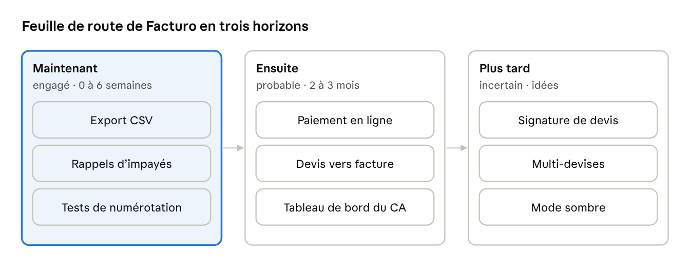
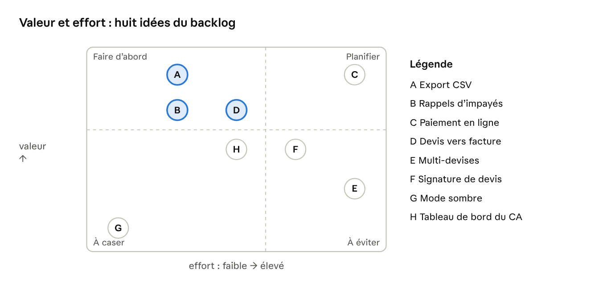
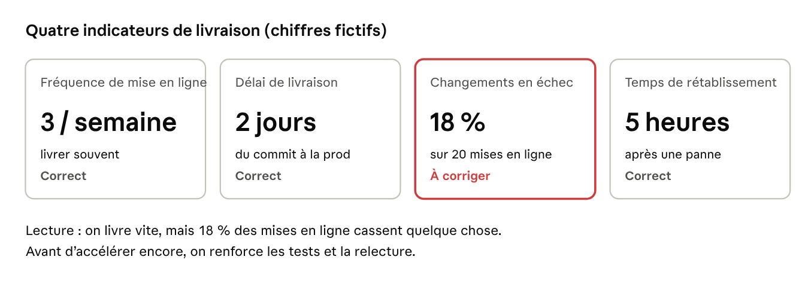
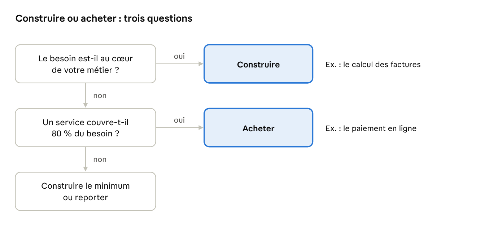

Module 9 : piloter l'application en production
Ce que vous saurez faire
Après ce module, vous saurez piloter la vie d'une application : choisir quoi faire, mesurer, suivre les coûts et décider par écrit. Le fil rouge est Facturo, avec un backlog de huit idées et peu de capacité pour les traiter.
- Construire une feuille de route en trois horizons.
- Prioriser un backlog avec une matrice, MoSCoW et RICE.
- Lire quatre indicateurs de livraison et en tirer des décisions.
- Tenir un registre de dette technique.
- Suivre les coûts mensuels d'une application.
- Rédiger une décision d'architecture (ADR) et arbitrer entre construire et acheter.
Prérequis : les modules 7 et 8. Durée : environ 4 heures. Lien avec Facturo : toutes les données chiffrées sont fictives et propres au fil rouge.
Leçon 9.1 : la feuille de route en trois horizons
Une feuille de route décrit où va le produit, sans promettre de dates qu'on ne peut pas tenir. Les trois horizons (maintenant, ensuite, plus tard) évitent ce piège. Plus l'horizon est loin, moins le contenu est précis, et c'est volontaire.
L'horizon "maintenant" est engagé : on sait ce qu'on fait et pourquoi. "Ensuite" est probable mais peut changer. "Plus tard" regroupe des idées dont on n'est pas sûr.

Lire le schéma
- Trois colonnes se lisent de gauche à droite : le temps avance.
- La colonne "Maintenant" est surlignée : c'est la seule dont vous répondez.
- Sous chaque titre, le niveau de certitude : engagé, probable, incertain.
- Une idée peut glisser d'une colonne à l'autre ; ce n'est pas un échec, c'est le but.
Exemple Facturo
Marie Giraud demande le paiement en ligne. Vous ne le promettez pas pour "décembre" : il est dans "Ensuite", avec la phrase "prévu dans les 2 à 3 mois, sous réserve du choix du prestataire". Marie sait où en est sa demande, et vous gardez de la marge.
À retenir
- Trois horizons : maintenant (engagé), ensuite (probable), plus tard (incertain).
- Moins c'est proche, moins c'est précis.
- On promet l'ordre et l'intention, pas une date lointaine.
Erreurs fréquentes
- Donner une date ferme sur une idée de la colonne "Plus tard".
- Remplir "Maintenant" avec dix sujets.
- Ne jamais réviser la feuille de route.
Leçon 9.2 : prioriser le backlog
Prioriser, c'est choisir ce qu'on ne fait pas. Trois outils complémentaires aident : la matrice valeur et effort pour une première vue, MoSCoW pour classer par engagement, RICE pour comparer avec des chiffres. Aucun ne décide à votre place ; ils rendent la discussion explicite.
Voici le backlog de Facturo, avec des notes fictives de 1 à 5.
| Lettre | Idée | Valeur (1 à 5) | Effort (1 à 5) |
|---|---|---|---|
| A | Export CSV | 5 | 2 |
| B | Rappels d'impayés | 4 | 2 |
| C | Paiement en ligne | 5 | 5 |
| D | Devis vers facture | 4 | 3 |
| E | Multi-devises | 2 | 5 |
| F | Signature de devis | 3 | 4 |
| G | Mode sombre | 1 | 1 |
| H | Tableau de bord du CA | 3 | 3 |

Lire le schéma
- L'axe horizontal est l'effort : à gauche, peu de travail ; à droite, beaucoup.
- L'axe vertical est la valeur : en haut, utile ; en bas, accessoire.
- Chaque lettre est une idée du tableau ci-dessus.
- Le coin haut gauche (A, B, D) est à faire d'abord. C est un pari coûteux mais très utile, à planifier.
- E et F, coûteux et peu utiles, sont à éviter pour l'instant.
MoSCoW
MoSCoW range les idées en quatre classes : Must (indispensable), Should (important), Could (souhaitable), Won't (pas cette fois). La classe "Won't" est la plus utile : elle écrit ce qu'on refuse.
| Classe | Idées | Justification |
|---|---|---|
| Must | A, B | Demandées par les clients, peu coûteuses |
| Should | C, D | Forte valeur, délai plus long |
| Could | G, H | Agréables, à faire s'il reste du temps |
| Won't (ce trimestre) | E, F | Peu de demandes, coût élevé |
RICE
RICE donne un score à chaque idée : Reach (combien de clients par trimestre), Impact (de 0,25 à 3), Confidence (confiance dans l'estimation, de 0 à 1), Effort (en semaines de travail). La formule est Reach × Impact × Confidence ÷ Effort. Tous les chiffres ci-dessous sont fictifs.
| Idée | Reach | Impact | Confidence | Effort (sem.) | Calcul | Score |
|---|---|---|---|---|---|---|
| A Export CSV | 400 | 2 | 0,9 | 2 | 400 × 2 × 0,9 ÷ 2 | 360 |
| B Rappels d'impayés | 600 | 2 | 0,8 | 3 | 600 × 2 × 0,8 ÷ 3 | 320 |
| D Devis vers facture | 500 | 1 | 0,8 | 4 | 500 × 1 × 0,8 ÷ 4 | 100 |
| C Paiement en ligne | 700 | 3 | 0,5 | 12 | 700 × 3 × 0,5 ÷ 12 | 87,5 |
| G Mode sombre | 300 | 0,25 | 0,9 | 1 | 300 × 0,25 × 0,9 ÷ 1 | 67,5 |
| H Tableau de bord du CA | 400 | 1 | 0,8 | 5 | 400 × 1 × 0,8 ÷ 5 | 64 |
| F Signature de devis | 200 | 1 | 0,5 | 8 | 200 × 1 × 0,5 ÷ 8 | 12,5 |
| E Multi-devises | 50 | 1 | 0,5 | 10 | 50 × 1 × 0,5 ÷ 10 | 2,5 |
Le paiement en ligne tombe en quatrième place, alors que la matrice le jugeait très utile. La raison : son effort est de 12 semaines et la confiance de 0,5. Le score ne dit donc pas "ne le faites pas", mais "réduisez l'incertitude d'abord". C'est ce que fait la leçon 9.6 avec une décision d'architecture.
À retenir
- La matrice donne la vue, MoSCoW l'engagement, RICE le chiffre.
- Un score oriente la discussion ; il ne remplace pas votre jugement.
- La classe "Won't" est celle qui protège votre équipe.
Erreurs fréquentes
- Croire qu'un score RICE est une vérité : les entrées sont des estimations.
- Ne jamais écrire ce qu'on refuse.
- Estimer l'effort sans les développeurs ou sans l'agent qui fera le travail.
- Oublier la confiance : une grosse valeur incertaine vaut moins qu'une petite valeur sûre.
Leçon 9.3 : mesurer la livraison avec quatre indicateurs
Pour savoir si l'équipe va mieux ou moins bien, mesurez quatre choses simples. La fréquence de mise en ligne dit à quelle cadence vous livrez. Le délai de livraison compte le temps entre un changement terminé et sa mise en ligne. Le taux de changements en échec donne la part des mises en ligne qui provoquent un problème. Le temps de rétablissement mesure la durée pour réparer. On les appelle souvent les indicateurs DORA, du nom du programme de recherche qui les a popularisés.

Lire le schéma
- Chaque tuile est un indicateur ; la valeur est en grand, son sens dessous.
- Les trois tuiles neutres sont correctes pour une petite équipe.
- La tuile rouge est celle qui demande une action : 18 % d'échecs.
- En bas, la lecture combinée : vitesse correcte, qualité insuffisante.
Exemple Facturo : des chiffres aux décisions
| Valeur observée | Ce que cela signifie | Décision |
|---|---|---|
| 3 mises en ligne par semaine | Cadence saine | Ne rien changer |
| 2 jours de délai | Le pipeline fonctionne | Surveiller |
| 18 % d'échecs | Trop de régressions | Ajouter des tests de non-régression et une relecture systématique avant fusion |
| 5 heures de rétablissement | Acceptable mais lent | Rédiger une procédure de retour arrière (rollback) en 15 minutes |
Attention aux fausses interprétations. Si vous fixez "20 mises en ligne par semaine" comme objectif, vous obtiendrez des mises en ligne minuscules, pas de meilleurs résultats. Un indicateur sert à détecter un problème, pas à noter les personnes.
À retenir
- Quatre indicateurs : cadence, délai, taux d'échec, temps de rétablissement.
- On les lit ensemble : aller vite en cassant souvent n'est pas un progrès.
- Un indicateur déclenche une question, pas une sanction.
Erreurs fréquentes
- Fixer un objectif chiffré sur un seul indicateur.
- Comparer l'équipe à une autre sans tenir compte du contexte.
- Ne pas définir ce qu'est un "échec" avant de compter.
Leçon 9.4 : gérer la dette technique
La dette technique est le coût futur d'un raccourci pris aujourd'hui. Comme une dette financière, elle porte des intérêts : chaque nouveau changement devient plus lent ou plus risqué. Elle n'est pas toujours mauvaise : un raccourci conscient peut être un bon choix, à condition de l'écrire.
Le registre de dette est un tableau court où chaque raccourci est noté avec son coût et son déclencheur. Voici celui de Facturo (données fictives).
| N° | Dette | Intérêt (ce que ça coûte) | Coût de correction | Priorité | Déclencheur |
|---|---|---|---|---|---|
| D1 | Aucun test sur la numérotation des factures | Risque de trou dans les numéros, erreur légale | 2 jours | Haute | Maintenant |
| D2 | Logique de TVA dupliquée dans Facturation et Export | Deux endroits à corriger à chaque changement de taux | 3 jours | Moyenne | Avant l'ajout du taux 5,5 % partout |
| D3 | Fichier FactureController de 600 lignes | Relecture lente, erreurs d'agents | 4 jours | Moyenne | Avant le paiement en ligne |
| D4 | Dépendances non mises à jour depuis 8 mois | Failles de sécurité connues possibles | 1 jour | Haute | Ce mois-ci |
| D5 | Mise en page des e-mails copiée trois fois | Modification triple | 1 jour | Basse | Au prochain changement de logo |
Une règle simple : réservez une part fixe de la capacité à la dette, par exemple 20 % de chaque cycle (chiffre d'exemple, à adapter). Sans réservation, la dette perd toujours face aux nouvelles fonctionnalités.
À retenir
- La dette technique est un raccourci dont le coût revient plus tard.
- Un registre écrit donne un coût et un déclencheur à chaque raccourci.
- Une part fixe de capacité est le seul moyen de la rembourser.
Erreurs fréquentes
- Appeler "dette" tout ce qui dérange, sans coût ni intérêt.
- Tout vouloir corriger d'un coup.
- Laisser les agents ajouter de la dette (doublons, fichiers géants) sans relecture.
Leçon 9.5 : suivre les coûts
Une application a un coût mensuel qu'il faut connaître pour fixer un prix. Les agents ajoutent une ligne nouvelle : le coût en jetons, que la leçon 7.7 vous a appris à calculer. Tous les chiffres ci-dessous sont fictifs.
| Poste | Montant mensuel | Remarque |
|---|---|---|
| Hébergement (serveur privé virtuel) | 40 € | Une machine, Docker |
| Sauvegardes | 8 € | Copie quotidienne |
| Nom de domaine et e-mails transactionnels | 15 € | Rappels d'impayés |
| Surveillance et alertes | 20 € | Disponibilité et erreurs |
| Licences d'outils de développement | 60 € | Deux postes |
| Agents IA (jetons) | 150 € | Environ 500 tâches à 0,30 € |
| Total | 293 € | 40 + 8 + 15 + 20 + 60 + 150 |
Avec 120 abonnés à 19 € par mois, soit 2 280 € de revenu, le coût par abonné est de 293 ÷ 120, soit environ 2,44 €. La marge brute est large, mais le poste "agents" croît avec l'usage. Revoyez ce tableau chaque mois et notez les écarts supérieurs à 20 %.
À retenir
- Connaissez le coût mensuel total et le coût par client.
- Les jetons des agents sont un poste à part entière.
- Un écart de plus de 20 % se commente par écrit.
Erreurs fréquentes
- Oublier le temps humain, qui reste le premier coût.
- Ne pas suivre les jetons avant la première grosse facture.
- Fixer un prix sans calculer le coût par client.
Leçon 9.6 : décider et documenter
Une décision non écrite est oubliée, puis refaite. Le format ADR (Architecture Decision Record, enregistrement de décision d'architecture) tient sur une page : contexte, options, décision, conséquences. Il répond à la question qu'un nouvel arrivant, ou un agent, posera dans six mois : pourquoi ce choix ?
Avant d'écrire l'ADR, l'arbre ci-dessous aide à trancher entre construire et acheter.

Lire le schéma
- On part de la question du haut : le besoin est-il au cœur de votre métier ?
- Si oui, on construit : c'est ce qui vous différencie (ici, le calcul des factures).
- Sinon, on demande si un service couvre 80 % du besoin ; si oui, on achète.
- Si aucun service ne convient, on construit le minimum ou on reporte.
Exemple Facturo : l'ADR du paiement en ligne
ADR-007 : Choix du prestataire de paiement en ligne
Statut : accepté (exemple fictif)
CONTEXTE
Marie Giraud et une partie des clients demandent le paiement en ligne.
L'équipe est petite. Les données de carte bancaire sont soumises à des
règles de sécurité strictes que nous ne voulons pas porter.
OPTIONS
1. Construire une intégration directe avec une banque : 12 semaines,
responsabilité complète sur les données de carte.
2. Prestataire de paiement avec page hébergée chez lui : 3 semaines,
aucune donnée de carte chez Facturo.
3. Prestataire avec formulaire intégré à notre page : 5 semaines,
exigences de sécurité intermédiaires.
DÉCISION
Option 2.
CONSÉQUENCES
+ Aucune donnée de carte stockée. Mise en ligne en 3 semaines.
- Commission par transaction. Dépendance au prestataire.
- Personnalisation de la page de paiement limitée.
Réversibilité : l'appel est isolé dans le module Paiement, derrière
une interface PasserelleDePaiement. Changer de prestataire
coûte quelques jours.
Revue : dans 6 mois, ou si la commission dépasse le seuil fixé.Cet ADR reprend la question laissée ouverte par RICE : la confiance de 0,5 sur le paiement venait de l'incertitude sur la solution. Le choix de l'option 2 ramène l'effort de 12 à 3 semaines et relance le score.
À retenir
- Un ADR dit le contexte, les options, la décision et ses conséquences.
- Construisez ce qui vous différencie ; achetez le reste.
- Notez la réversibilité : comment revenir en arrière.
Erreurs fréquentes
- Ne documenter que la décision, pas les options refusées.
- Construire ce qu'un service fait déjà très bien.
- Choisir un prestataire sans isoler son appel dans une interface.
Leçon 9.7 : la revue mensuelle
Une revue d'une heure par mois remet tous ces outils à jour. Elle suit six questions, dans cet ordre.
- Qu'avons-nous livré ce mois-ci, et qu'est-ce qui a glissé ?
- Que disent les quatre indicateurs de livraison ?
- Quelle ligne du registre de dette avons-nous remboursée ou aggravée ?
- Les coûts ont-ils dévié de plus de 20 % ?
- La feuille de route est-elle encore vraie ? Qu'est-ce qui change d'horizon ?
- Quelle décision mérite un ADR ?
Notez les réponses dans un document partagé. Dix lignes suffisent.
Atelier guidé : piloter Facturo pendant un trimestre
Comptez 2 heures. Vous jouez le rôle du gestionnaire d'app.
- Recopiez le backlog de la leçon 9.2 dans un tableau. Attendu : huit lignes, avec valeur et effort.
- Placez chaque idée dans la matrice et classez-la avec MoSCoW. Attendu : au moins deux idées en "Won't".
- Calculez le score RICE de trois idées de votre choix. Attendu : les mêmes résultats que le tableau, ou un écart que vous expliquez.
- Construisez la feuille de route en trois horizons. Attendu : "Maintenant" contient trois sujets au plus.
- Remplissez le registre de dette avec cinq lignes. Attendu : chaque ligne a un coût et un déclencheur.
- Calculez le coût mensuel et le coût par abonné. Attendu : 293 € et environ 2,44 € avec les chiffres de la leçon.
- Rédigez un ADR sur un choix réel de votre projet. Attendu : une page, trois options, une réversibilité.
- Passez la revue mensuelle en six questions. Attendu : dix lignes de notes.
Exercices
Exercice 1. Calculez le score RICE d'une idée "Export PDF des factures" : Reach 350, Impact 1, Confidence 0,8, Effort 2 semaines. Comparez-la à l'export CSV (360).
Exercice 2. Classez en MoSCoW : correction d'une faille de sécurité, mode sombre, import de clients depuis un fichier, multi-devises. Justifiez en une phrase chacune.
Exercice 3. Vos indicateurs du mois : 1 mise en ligne par semaine, 9 jours de délai, 5 % d'échecs, 2 heures de rétablissement. Que concluez-vous ? Que décidez-vous ?
Exercice 4. Vous hésitez entre un moteur de rappels e-mail construit en interne et un service externe qui couvre 90 % du besoin. Que dit l'arbre ? Écrivez la section Contexte et Décision d'un ADR.
Corrigé
Exercice 1. 350 × 1 × 0,8 ÷ 2 = 140. Elle dépasse le devis vers facture (100) et reste loin derrière l'export CSV (360). Elle est utile mais pas prioritaire.
Exercice 2. La faille de sécurité est Must : le risque est immédiat. L'import de clients est Should : il accélère l'adoption. Le mode sombre est Could : confort. Le multi-devises est Won't ce trimestre : peu de demandes, coût élevé.
Exercice 3. Vous livrez peu et lentement, mais presque sans casse et vous réparez vite. Le problème n'est pas la qualité, c'est la cadence : 9 jours de délai suggèrent des blocages. Décision : chercher où les changements attendent (relecture, validation, tests lents) et réduire la taille des changements.
Exercice 4. Les rappels ne sont pas le cœur du métier et un service couvre 90 % du besoin : acheter. Contexte : l'équipe est petite, les rappels ne différencient pas Facturo, un service couvre 90 % du besoin. Décision : utiliser le service externe, derrière une interface dans le module Notifications, pour pouvoir le remplacer.
Quiz d'auto-évaluation
| Question | Réponse | Pourquoi |
|---|---|---|
| Pourquoi trois horizons plutôt que des dates ? | Le futur lointain est incertain | On promet l'ordre et l'intention, pas des dates fragiles |
| Que signifie la lettre "W" de MoSCoW ? | Won't : ce qu'on ne fera pas cette fois | Écrire un refus protège la capacité de l'équipe |
| Comment se calcule un score RICE ? | Reach × Impact × Confidence ÷ Effort | La confiance pénalise les estimations fragiles |
| Quels sont les quatre indicateurs de livraison ? | Cadence, délai, taux d'échec, temps de rétablissement | Ils se lisent ensemble : vitesse et qualité |
| Qu'est-ce qu'un déclencheur dans le registre de dette ? | L'événement qui impose de rembourser | Il évite le "un jour" qui n'arrive jamais |
| Quand acheter plutôt que construire ? | Quand le besoin n'est pas au cœur du métier et qu'un service couvre l'essentiel | On construit ce qui différencie, on achète le reste |
Checklist de validation
- Je sais construire une feuille de route en trois horizons.
- Je sais utiliser la matrice, MoSCoW et RICE, et je connais leurs limites.
- Je lis les quatre indicateurs de livraison et j'en déduis une action.
- Je tiens un registre de dette avec coût et déclencheur.
- Je connais le coût mensuel et le coût par client de mon application.
- Je sais rédiger un ADR d'une page.
- Je sais passer la revue mensuelle en six questions.
Sources
Aucune source externe n'a été consultée pour ce module. Les méthodes (feuille de route par horizons, MoSCoW, RICE, indicateurs DORA, ADR) sont présentées d'après la pratique courante de gestion de produit. Tous les chiffres, prix et noms sont fictifs. Avant diffusion, vérifiez les définitions officielles des indicateurs DORA auprès du programme DORA.